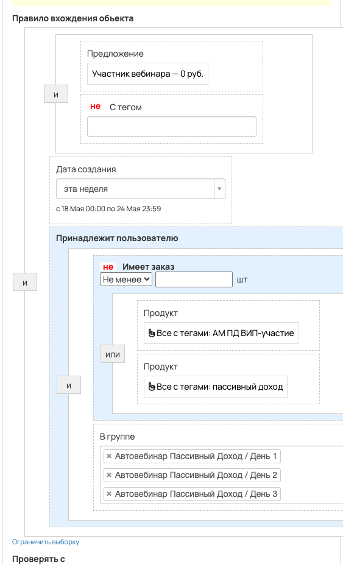
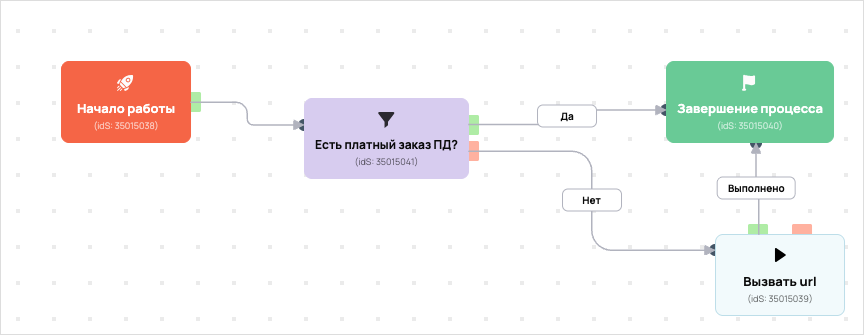

Передача в амо ПД зрители
- ID процесса:
2024348 - Объект: Заказы
- Статус: Активен
Описание из GetCourse
30.06.2026. Подробный ход процесса GetCourse:
Главное: В процесс попадают заказы по правилу: Предложение (ID: 5300529) и НЕ С тегом (ID: 1439205, 1439206, 1439207) и Дата создания и Принадлежит пользователю.
Процесс работает с объектом GetCourse: Заказы. Текущий статус процесса: Активен.
Как идет процесс внутри GetCourse:
- Схема состоит из 6 блоков и 9 переходов.
Конец подробного хода процесса GetCourse.
https://vakas-tools.ru/account/base/amo.php?base_id=73270
26.05.2026 по задаче https://spi.bitrix24.ru/online/?IM_TASK=chat24416&IM_MESSAGE=2117804: добавлена передача комментариев из вебинарной комнаты в amoCRM. Поле GetCourse: у пользователя — webinar_user_comments. В процессах по пользователям передаем как {object.webinar_user_comments}; в процессах по заказам — как {object.user.webinar_user_comments}. В Vakas это приходит в параметр {comments} и записывается через «Шаблон примечания 2»: Комментарии из вебинарной комнаты: {comments}
Понятное описание процесса
- Процесс работает с объектом GetCourse: Заказы. Текущий статус процесса: Активен.
- На вход попадают данные так: В процесс попадают заказы по правилу: Предложение (ID: 5300529) и НЕ С тегом (ID: 1439205, 1439206, 1439207) и Дата создания и Принадлежит пользователю.
- Внутри схемы есть дополнительные проверки/ожидания: 1. Основные блоки: «Есть платный заказ ПД?».
- Дальше процесс делает прямые вызовы Vakas: 1. Напрямую задействованы базы: 73270.
- Передача: 73270. Передача в амо ПД зрители: Оплаты и заказы. Передаются параметры:
number,id,order_id,positions,costMoney,leftCostMoney,payedMoney,status,paymentLink,firstNameи другие. - Что происходит в amoCRM: На входе в этап ОТДЕЛ - ДОВЕДЕНИЯ -> ПОСМОТРЕЛИ ВЕБИНАР 1 [57387586] база ищет дубль и, если находит его, обновляет сделку без смены этапа.
Ход процесса в GetCourse
- Схема состоит из 6 блоков и 9 переходов.
- По типам: стартов 1, условий/ожиданий 1, вызовов URL 3, изменений полей 0, финалов 1.
Блоки процесса: что делают и зачем нужны:
- Блок
35015038«Начало работы» (старт). Что делает: Запускает выполнение схемы для объекта, который попал под правило входа процесса. Зачем нужен: Нужен как точка входа: от него GetCourse начинает движение объекта по схеме. Дальше: если результат «Выполнено», идет в «Есть платный заказ ПД?». - Блок
35015041«Есть платный заказ ПД?» (условие). Что делает: Проверяет условие: Принадлежит пользователю. Зачем нужен: Нужен, чтобы разделить поток: подходящих пользователей/заказы отправить дальше, неподходящих перевести на другую ветку или завершить. Дальше: если результат «Нет», идет в «Вызвать url»; если результат «Да», идет в «Завершение процесса». - Блок
35015040«Завершение процесса» (завершение). Что делает: Завершает ветку процесса после выполненных проверок и действий. Зачем нужен: Нужен, чтобы закрыть текущую ветку и не гонять объект по процессу повторно. Дальше переходов нет: это конечная точка ветки. - Блок
35015039«Вызвать url» (вызов URL). Что делает: Передает в Vakas: 73270. Передача в амо ПД зрители, канал «Оплаты и заказы» (GET); параметры:number,id,order_id,positions,costMoney,leftCostMoney,payedMoney,status,paymentLink,firstName,lastName,name,email,phoneи другие; timeout 300 сек. Зачем нужен: Нужен, чтобы передать подходящий объект в 73270. Передача в амо ПД зрители; дальше На входе в этап ОТДЕЛ - ДОВЕДЕНИЯ -> ПОСМОТРЕЛИ ВЕБИНАР 1 [57387586] база ищет дубль и, если находит его, обновляет сделку без смены этапа. Дальше: если результат «Ошибка», идет в «n8n fail после Вызвать url #35015039»; если результат «Выполнено», идет в «n8n success после Вызвать url #35015039». - Блок
43524633«n8n success после Вызвать url #35015039» (вызов URL). Что делает: Вызывает внешний URL: testn8n.easydrafting.ru/webhook/gc-vakas-retry-events (POST); параметры:event,clientED,gcDomain,action,process_id,process_name,entity_type,object_id,order_id,user_id,name,email,phone,error_message; timeout 10 сек. Зачем нужен: Нужен, чтобы процесс GetCourse передал данные во внешний сервис testn8n.easydrafting.ru. Дальше: если результат «Ошибка», идет в «Завершение процесса»; если результат «Выполнено», идет в «Завершение процесса». - Блок
43524752«n8n fail после Вызвать url #35015039» (вызов URL). Что делает: Вызывает внешний URL: testn8n.easydrafting.ru/webhook/gc-vakas-retry-events (POST); параметры:event,clientED,gcDomain,action,process_id,process_name,entity_type,object_id,order_id,user_id,name,email,phone,error_message; timeout 10 сек. Зачем нужен: Нужен, чтобы процесс GetCourse передал данные во внешний сервис testn8n.easydrafting.ru. Дальше: если результат «Ошибка», идет в «Есть платный заказ ПД?»; если результат «Выполнено», идет в «Есть платный заказ ПД?».
Скриншоты процесса


Откуда: процесс берет объекты по правилу входа «Предложение (ID: 5300529) и НЕ С тегом (ID: 1439205, 1439206, 1439207) и Дата создания и Принадлежит пользователю».
Что проверяет по пути: перед отправкой в база 73270 (Оплаты и заказы).
Куда ведет: вызывает внешний URL Vakas и передает данные в база 73270 (Оплаты и заказы).
Логика Vakas и amoCRM
- Условие входа в процесс: Предложение (ID: 5300529) и НЕ С тегом (ID: 1439205, 1439206, 1439207) и Дата создания и Принадлежит пользователю.
- Вызовов Vakas в схеме:
1. Уникальных URL Vakas:1. Связанных баз:1.
Связанная база Vakas: 73270. Передача в амо ПД зрители
- Использование в процессе: Оплаты и заказы
- Документация базы: 73270. Передача в амо ПД зрители
- Страница настройки: Vakas
- Поиск дублей: Проверять на дубли
- Искать только в выбранных воронках: 0
- Ответственный по контакту имеет приоритет: Нет
Вызовы из процесса
Вызвать url
- Endpoint:
payments - URL вызова:
https://vakas-tools.ru/base/payments/8927217/73270/?number={object.number}&id={object.user.id}&order_id={object.id}&positions={object.positions}&costMoney={object.cost_money}&leftCostMoney={object.left_cost_money}&payedMoney={object.payed_money}&status={object.status}&paymentLink={object.payment_link}&firstName={object.user.first_name}&lastName={object.user.last_name}&name={object.user.name}&email={object.user.email}&phone={object.user.phone}&manager_name={object.manager}&manager_email={object.manager_email}&manager_phone={object.manager_phone}&offers={object.offers}&avatarUrl={object.user.avatar_url}&utmS={object.user.create_session.utm_source}&utmM={object.user.create_session.utm_medium}&utmCa={object.user.create_session.utm_campaign}&utmCo={object.user.create_session.utm_content}&utmT={object.user.create_session.utm_term}&comments={object.user.webinar_user_comments} - Связанная база Vakas: 73270. Передача в амо ПД зрители
Когда срабатывает в процессе
- Сценарий 1:
Начало работы--Выполнено-->Есть платный заказ ПД?--Нет-->Вызвать url- условие
Есть платный заказ ПД?: Принадлежит пользователю ->Нет
- условие
Что уходит в Vakas
<details> <summary>Показать 25 параметров запроса</summary>
numberidorder_idpositionscostMoneyleftCostMoneypayedMoneystatuspaymentLinkfirstNamelastNamenameemailphonemanager_namemanager_emailmanager_phoneoffersavatarUrlutmSutmMutmCautmCoutmTcomments
</details>
Как база обработает вызов и что будет в amoCRM
- Логика создания сделки: сначала ищется существующая сделка/контакт по правилам базы; если подходящая сделка найдена, обновляется она, иначе создается новая.
- Режим проверки дублей: Проверять на дубли
- Искать дубль во всех воронках: Да
- Учитывать закрытые этапы при поиске дубля: нет
- Добавлять телефон/email в найденный контакт: Да
- Менять имя контакта при обновлении: Нет
- Автоотправка оплат в amoCRM: Да
- Базовый этап для этого вызова: определяется по типу оплаты
- Новый заказ: ОТДЕЛ - ДОВЕДЕНИЯ -> ПОСМОТРЕЛИ ВЕБИНАР 1 [57387586]
- Частичная оплата: ОТДЕЛ - ДОВЕДЕНИЯ -> ПОСМОТРЕЛИ ВЕБИНАР 3 [57387594]
- Полная оплата: ОТДЕЛ - ДОВЕДЕНИЯ -> ПОСМОТРЕЛИ ВЕБИНАР 3 [57387594]
- Поле amoCRM для суммы: оплачено[payedMoney]
- Двигать старые сделки только с выбранных этапов: Нет
- Этапы, из которых разрешен сдвиг: не ограничено
- Не менять этап при обновлении: Да
- Менять название сделки при обновлении: Да
- Теги сделки: не заданы
- Ответственный по умолчанию: EasyDrafting[12985298]
- Индивидуальные правила маршрутизации: нет